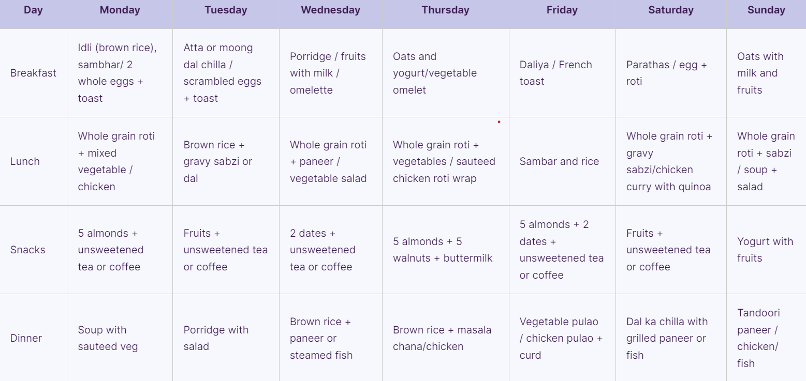

Meal Plans to Help You Lose Weight When You are overweight
Overweight is a condition wherein an individual has higher-than-average body fat.
This is not just a cosmetic problem but is also a serious medical issue. Since it increases the propensity to develop other health problems like:hypertension, diabetes, cancer, lower immunity, etc, it needs to be diagnosed and treated at the earliest by checking the BMI. The causes of overweight might be different and one major role is played by the ethnicity of the person. Thus, while coming up with a diet plan for an obese person, the availability of resources would be a factor that needs due consideration. Also know about sugar diet chart Consulting a dietician and your doctor would be important before you come up with a diet plan so that you ensure that all possible nutrients are entering your body. Following a food list and a low-fat diet would be a staple guideline. In India, these foods are easily available in the markets or supermarkets and you can find different ways to cook these foods by following different recipes. Also know about sugar diet chart This chart can be used for a vegetarian or non-vegetarian diet plan for overweight

Foods to eat & avoid
Creating an overweight diet plan can be easy once you know what foods you can eat and what should be avoided for all-around good health. The Indian diet can be wholesome and several foods are perfect if you are looking to control or reduce your weight. Categories of food loaded with nutrition are often included in the ‘to-eat’ list. The use of Indian spices can also make a huge difference in the diet plan. Here is a list of foods that can be included in the diet for an obese person:
- Spices – The chart and diet for overweight recommends the use of spices like – turmeric, cardamom, cumin seeds, etc for their numerous benefits
- Vegetables – India is host to several veggies that are rich in antioxidants, and vitamins, high in fiber, and low in calories
- Dairy – Low-fat yogurt, curd, and buttermilk
- Legumes, pulses, and whole grains – these provide fibers and other essential nutrients
- Seeds and dried fruit – figs, dates, almonds, nuts, raisins, etc
- Beverages – unsweetened tea, coffee, lemonade, buttermilk
- Fresh fruits
Your diet for overweight chart needs to steer clear of these foods:
- Fast food – Burgers, pizzas, fries, etc
- Deep-fried foods – samosas, pakoras, chips, etc
- Sweets – mithai, pedha, gulab jamun, etc
- Processed foods
- High fat and high-carb foods
- Beverages – Sweetened beverages, alcohol, sodas, etc.
Want to make this task simple for you? You can do so by simply following this grocery list that includes several items that can make it easy for you to make your overweight diet plan.
- Whole grains – jowar, bajra, millets, ragi, quinoa, etc
- Vegetables – leafy greens, beans, cauliflower, cabbage, mushrooms, etc
- Whole fruits (not juices)
- Nuts and seeds
- Plant oil – sunflower, olive, etc
- Unsweetened beverages
- Steamed and baked snacks
- Makhana
- Popcorn without butter
- Sprouts
Other lifestyle & dietary tips
Along with the diet for overweight, certain other lifestyle tips are important to maintain so that the weight change is holistic and remains for a long time. You would want to ensure that your progress is lasting and you do not fall back to the original patterns that may end up increasing your weight. Some pro tips that can be followed as guided by experts are –
- Intermittent fasting
- Increase fiber intake
- Maintaining the healthy gut bacteria
- Manage stress well
- Avoiding late-night snacks
- Drink a lot of water
- Increase physical exercises
- Better stress management techniques
- Improved sleep cycle
- Having seasonal fruits and vegetables mushrooms, etc